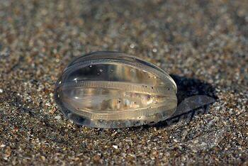
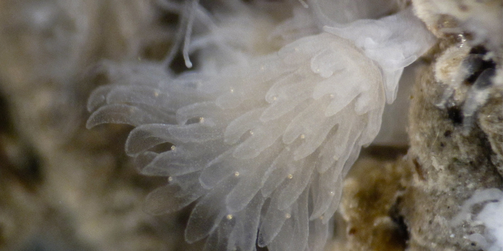

LIFE CYCLE
The life cycle of a jellyfish is comprised of six stages.

- The Egg
- The Planula Larva
- The Polyp
- The Budding Polyp
- The Ephyra Larva
- The Adult Medusa
1-2 The Egg & The Planula
After mating, a fertilized egg turns into a planula which is able to move with the ocean currents. After a few days, the planula attaches itself to a firm surface.
3-4 The Polyp
The attached planula then turns into a polyp. This polyp has a mouth and tentacles which it uses to feed itelf. After some more time, the polyp goes through a process of asexual reproduction, called 'budding'. Each 'bud' breaks off of the polyp and forms its own jellyfish.
5-6 The Mobile Jellyfish

These newly separated buds are called Ephyra Larva, and they are essentially immature jellyfish. After some time in this stage, the Ephyra mature into Medusas, which generally live only a few months.